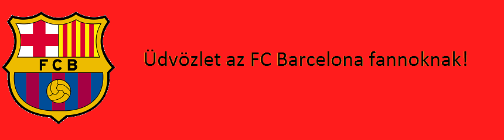

| |
 |
|
A klub jelentõsebb eredményeit tekintve a spanyol labdarúgó- bajnokság elsõ osztályát 25, a spanyol labdarúgókupát 30, a spanyol labdarúgó-szuperkupát 13, az UEFA-bajnokok ligáját és elõdjét öt, az UEFA-kupa elõdjét három, a kupagyõztesek Európa-kupáját négy, az UEFA-szuperkupát pedig öt alkalommal nyerte meg a csapat. Ezenkívül számos kisebb spanyol és katalán trófeát tudhat magáénak a klub. A csapat eddig olyan világhírû külföldi játékosokat tudhatott a soraiban, mint többek között Kubala László, Kocsis Sándor, Czibor Zoltán, Johan Cruyff, Diego Maradona, Gary Lineker, Romário, Hriszto Sztoicskov, Rivaldo, Luís Figo, Ronaldo, Ronaldinho, Lionel Messi, Thierry Henry, Zlatan Ibrahimoviæ, Luis Suárez és Neymar. A klub hazai játékosai közül pedig számos labdarúgó volt meghatározó tagja a spanyol labdarúgó-válogatottnak. |